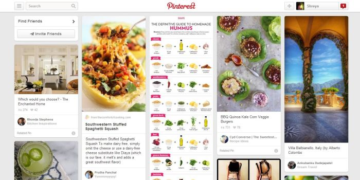
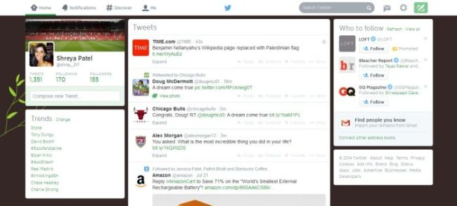
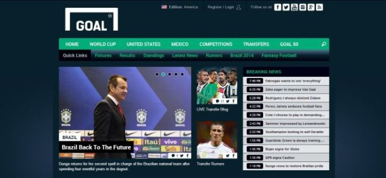

3 Favorite Websites
By Shreya Patel
July 20th, 2014
Pinterest is one of my top three favorite websites! You are definitely missing out if you have never visited or used the site. As the name suggests, you pin what you are interested in. What does that mean? Well, Pinterest is organized with a bunch of pins that contain different ideas. It can be anything from fashion, recipes, designs, crafts, you name it, and it will be there. When you see something you like or want to add to your profile, you pin it. You can organize all your pins onto different boards (like categories). You also can follow other users to see what they’ve pinned or look for specific ideas through the search box.
Since all the pins are on the main page, the site can get overwhelming at first glance. Once you figure out what you’re looking at you realize you have three options from the main page: use the search box, scroll through the pins, or click on your profile.
I think the reason why Pinterest sticks to white, grey, and red as its theme colors is because of the all the colors present within the pins. The combination of colors is used wisely to point out its features and doesn’t take away from the pins. Overall, it’s clean and simple.
The site is interactive, fun, and you can easily spend hours on it. Pinterest is a great place to seek and share ideas!

Twitter is amazing! It’s a social website where you can share and read just about anything by following other users. The neat thing about Twitter is that you can hash-tag your post (called a tweet) and it connects to all the other tweets tagged with that hash. You can see trending hash-tags related to news, celebrities, events, etc. If you like a tweet, you can favorite it or you can share it by re-tweeting it. Not only can you share your thoughts, but you can also attach pictures and share articles.
The most important, eye-catching aspect of the website is the center column of the homepage. The center column is the newsfeed where all the tweets of the people you follow are located. The newsfeed updates chronologically, with the most current tweet on top.
The twitter layout is simple, organized, and contemporary. It follows a simple three-column layout on all of its pages. You have the option to customize your background, font colors, and upload a profile picture along with a bit of information about you. Twitter is easy to navigate, as the navigation bar is always located at the top no matter the page of the website you are visiting. You can easily browse through your newsfeed, view other user profiles, and see trending hash tags all from your homepage.
Overall, twitter is a clever, fun, and a dynamic way of sharing and connecting with people around the world. It’s also very convenient, since you can access it from a computer, tablet, or smartphone. Although it can be addicting, you will always learn something new.

If you’re a soccer fan like me, you need a good source to get all the latest information about scores, teams, players, etc. My go to website for all the latest soccer news is Goal.
Since soccer is a popular sport worldwide, Goal has different editions of its website customized to each country; for example Edition America or Edition UK. But, the layout is the same for all editions. The main page layout is defined with different sections that contain assorted category links, quick links, breaking news, and featured articles, which are all easily accessible.
I think the contrast is great between the choices of colors: navy blue, teal, and white. Visually the website looks bold, sleek, and practical.